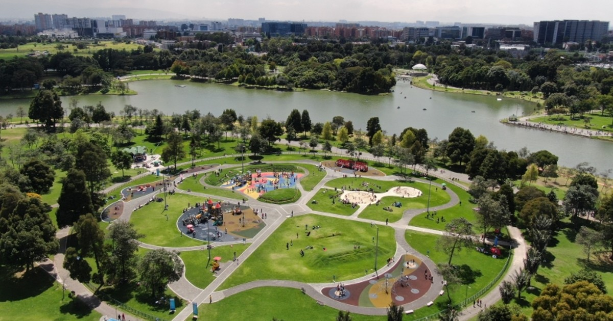

Monserrate
Una vista espectacular de Bogotá desde las alturas.

Descubre Bogotá como nunca antes lo habías imaginado
Una vista espectacular de Bogotá desde las alturas.
El corazón cultural e histórico de la ciudad.

Un oasis natural en medio de la metrópoli.
